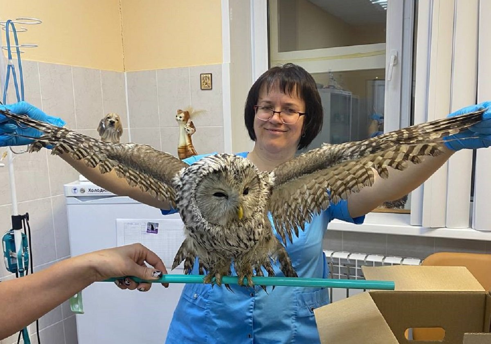

12 марта 2023
В рамках нашей последней миссии, команда "ДоброДел" успешно спасла группу редких сов, обнаруженных в отдаленной лесной зоне на окраине города. Эти удивительные птицы, находящиеся под угрозой исчезновения, были обнаружены случайным туристом, который немедленно сообщил нам о своей находке.
Специалисты нашего фонда оперативно отреагировали на сообщение и прибыли на место для оценки ситуации. Птицы были обессилены и нуждались в срочной помощи. Благодаря профессионализму нашей команды и сотрудничеству с местными ветеринарами, нам удалось стабилизировать состояние сов и начать их реабилитацию.
После нескольких недель заботы и лечения, все спасенные совы восстановились и были успешно выпущены обратно в дикую природу. Мы продолжаем мониторинг их состояния через специально установленные трекеры, чтобы убедиться, что они адаптируются к естественной среде обитания.
Этот случай является прекрасным примером того, как важно защищать нашу природу и дикую фауну. Мы благодарны каждому, кто принял участие в спасении этих прекрасных существ и продолжаем призывать общественность к бдительности и активному участию в защите природы.